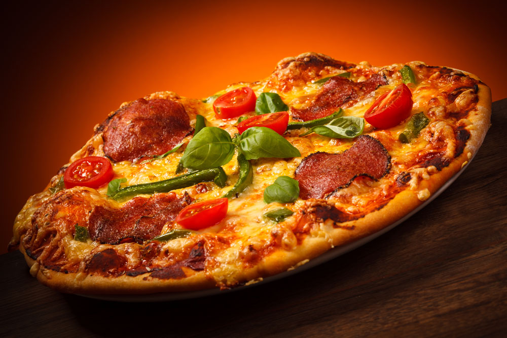

Home
基 本 披 萨 汁 洋葱 ：1/4个 蒜头：1瓣 奶油：10克 （1）：番茄糊：2大匙（是tamatopaste 不是 ketchup，不要买错） 水：6大匙 盐：1/4小匙 黑胡椒粉：1/4小匙 披萨草（oregano）：1/4大匙 糖：1大匙 做 法： 1、 把洋葱和蒜头去皮并剁得极碎 2、 炒锅加热，加奶油炒香洋葱末和蒜末 3、 加（1）料拌匀煮沸即可 实 战 经 验： 1、 披萨草很不容易买，我一直到现在也没有，都是在原料里多加1/2匙的黑胡椒粉，味道也不错。 2、 剁洋葱和蒜头太痛苦了，我都是用压蒜器压，很省力，而且不会熏眼睛。压蒜器在普马和宜家都有卖，宜家的是25钱一个，很好用的，用来压蒜泥、姜汁、葱末都很好。 烤 培 方 法： 烤培披萨的方法都是一样的。 1、 烤箱预热到210度 2、 放在烤箱下层，烤20~25分钟 下面是具体的pizza 做法。 什锦海鲜披萨 1、基本饼皮：一份 2、基本披萨汁：一份 3、各种海鲜：共300克 4、乳酪丝：160克 做法： 1、 把披萨汁均匀涂在整形并刺洞的饼皮上，边缘不涂 2、 任选数种海鲜，共重300克即可（贝类海鲜需烫过，去壳取肉） 3、 把海鲜排在饼皮上，入烤箱烤20分钟，取出，撒上乳酪丝，继续烤5分钟即可 实战乳酪最好是用马苏里拉的乳酪，才会有“牵丝”的效果，当然别的也可以，只是不要买有重口味的，我有一回差点买了香葱味的奶酪，还好发现的早。用片状的奶酪效果不好，烤出来很稀薄的样子，令人没有食欲 =============================================================== 水果披萨的制作材料： 主料：小麦面粉200克,小麦富强粉400克 辅料：葡萄干75克,鸡蛋黄20克,酵母12克,朗姆酒30克,苹果35克,猕猴桃35克,奶酪130克 调料：盐12克,白砂糖35克,橄榄油40克 教您水果披萨怎么做，如何做水果披萨才好吃 1. 将面皮放入抹油的烤盘中，移入预热210℃的烤盘中； 2. 烘烤约7分钟，至颜色呈金黄色后取出； 3. 将苹果洗净、去核切片； 4. 奇异果洗净、去皮切片，备用； 5. 将烤盘刷上一层薄油，放入饼皮，并抹上奶油白酱（25克）； 6. 接着在饼皮上均匀撒上奶酪丝（50克）； 7. 再均匀铺上苹果、奇果、葡萄干，最后再撒上奶酪丝（30克）与奶酪粉（50克）； 8. 将饼皮移入预热200℃的烤箱中，烘烤约3分钟； 9. 于奶酪表面呈金黄色后，即可取出。 水果披萨的制作要诀： 加州甜披萨面皮制作： 小麦富强粉 400克、小麦面粉200克 配料：酵母12克、鸡蛋黄20克、葡萄干60克、朗姆酒、30克 调料： 盐12克、白砂糖35克、橄榄油40克。 1. 将干酵母放入小碗中，加入温水（300毫升）拌匀； 2. 将高筋面粉与低筋面粉过筛放入钢盆中，加入酵母稍微拌匀； 3. 再加入橄榄油、盐、白砂糖和蛋黄揉匀成面团； 4. 将面团取出摔打至面团光滑后滚封上保鲜膜进行基本发酵约35分钟； 5. 待面团体积膨胀为两倍大时，分割成三个小面团，再次滚成圆球，封上保鲜膜进行二次发酵约30分钟； 6. 将葡萄干放入小碗中，加入兰姆酒泡软； 7. 将发酵好的面团擀成面皮，均匀撒上葡萄干后对折擀开； 8. 再擀成圆面皮，以手指将边缘压厚，中央以叉子均匀叉出小洞即可。 自制奶油白酱 材料：奶油40克、洋葱碎40克、玉桂叶1片、蒜头碎10克、面粉60克、高汤500毫升、鲜奶200毫升、动物性鲜奶油50毫升、白酒15毫升、盐、糖适量。 1. 锅中放入奶油烧热，加入洋葱以中小火炒香； 2. 续加入玉桂叶、蒜碎、面粉炒匀，续加入高汤、鲜奶、动物性鲜奶油、白酒再次拌炒均匀； 3. 以盐、糖调味即可。